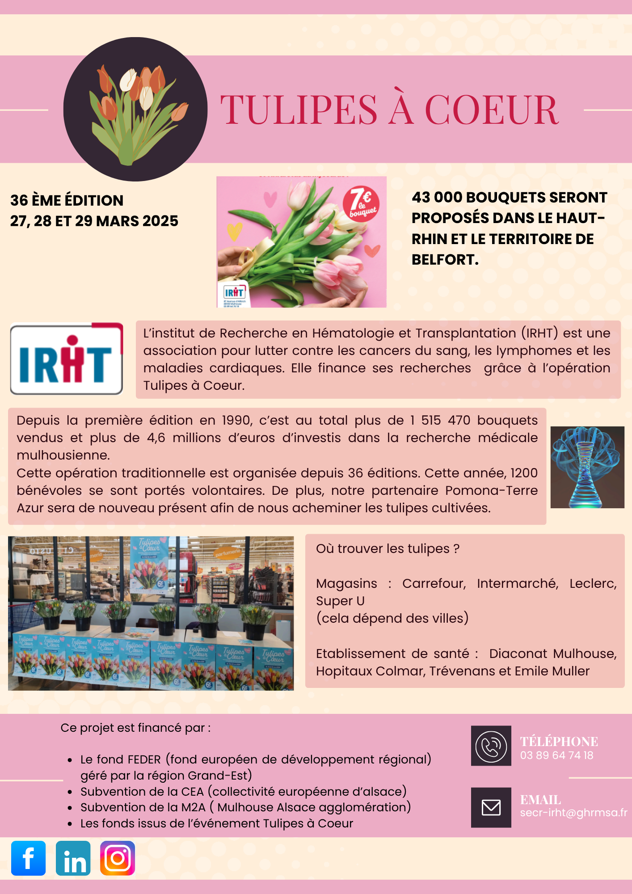

Explication du Projet :
Dans le cadre de notre projet, nous devions régulièrement synthétiser des dossiers complexes
de plusieurs pages en communiqués de presse percutants. Ces documents avaient deux objectifs
principaux : d’une part, résumer l’essentiel pour les médias en mettant en avant les points clés
(dates, innovations, partenaires), et d’autre part, informer le grand public de manière
accessible.
Certains communiqués étaient conçus pour susciter l’enthousiasme (lancements
d’événements, annonces surprises), tandis que d’autres avaient une visée plus pédagogique – par
exemple, expliquer les coulisses d’une organisation ou rassurer face à un imprévu. L’exercice
demandait d’adapter le ton et la structure selon la cible, tout en gardant une ligne éditoriale
cohérente avec l’identité du festival.
